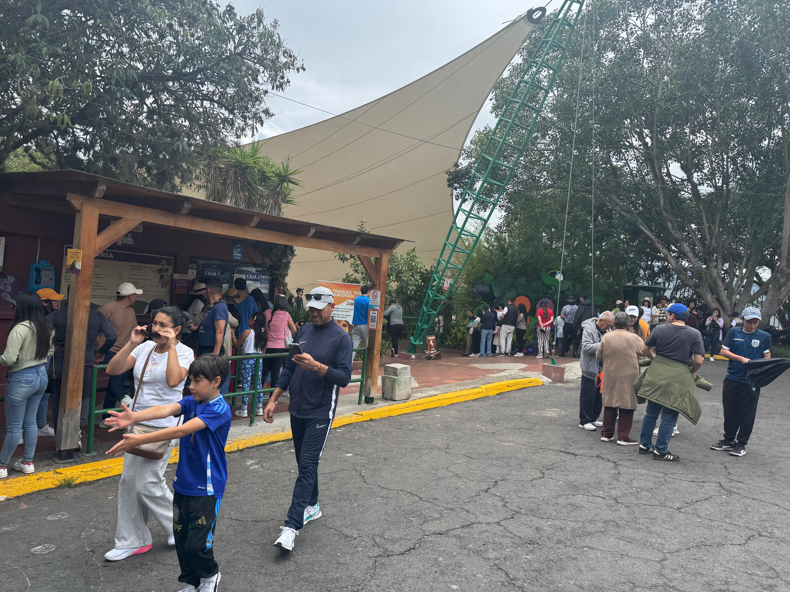
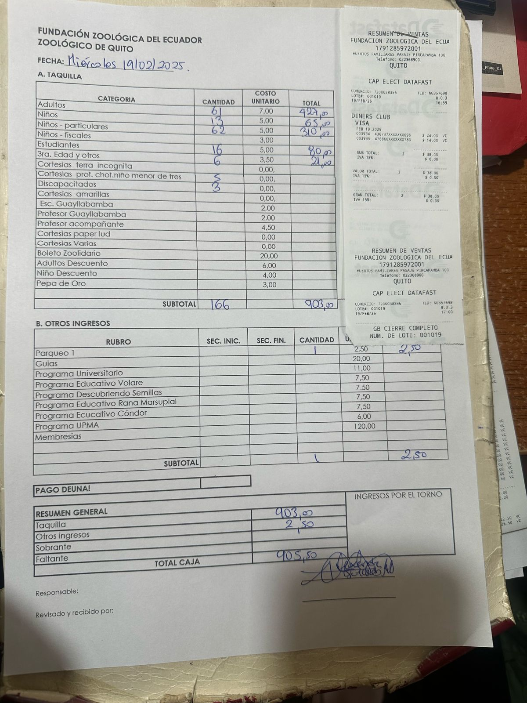
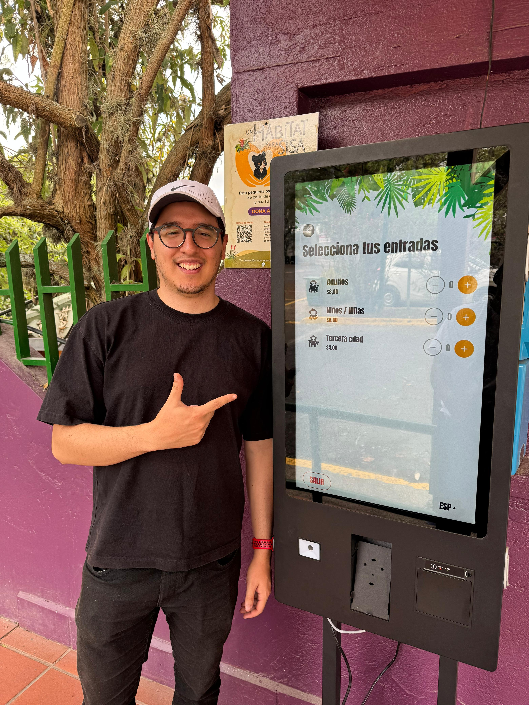

Supaday Quito · Supabase × SpaceXAI
Supabase
detrás de
300K tickets
Desafíos
- 01 Fila
- 02 Venta manual lenta
- 03 Facturación manual
- 04 0 data


Demo
visitawiwa.com

 Supabase
Supabase
DB
Auth
Storage
El downside de Supabase
¿Cómo llegué
a Wiwa?
Just build it
Preguntas
baquero.engineering @Cheveniko
Conectemos